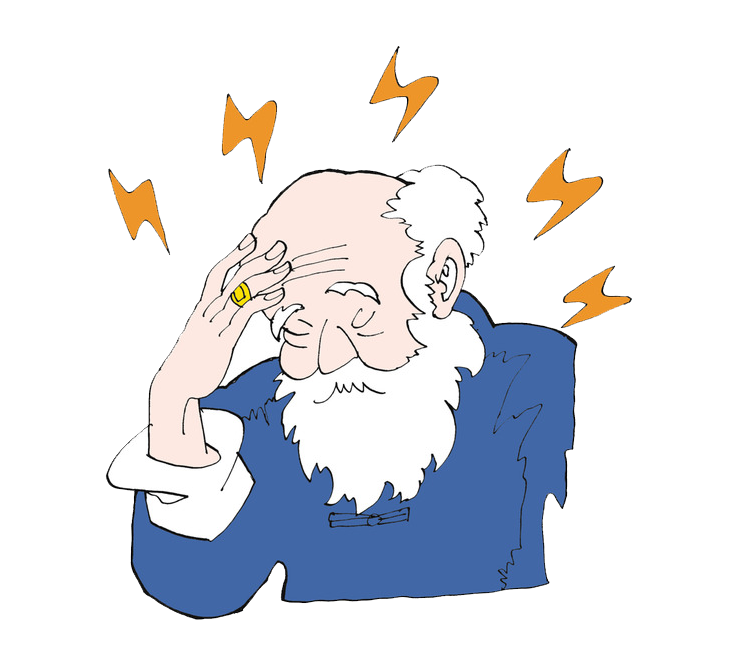
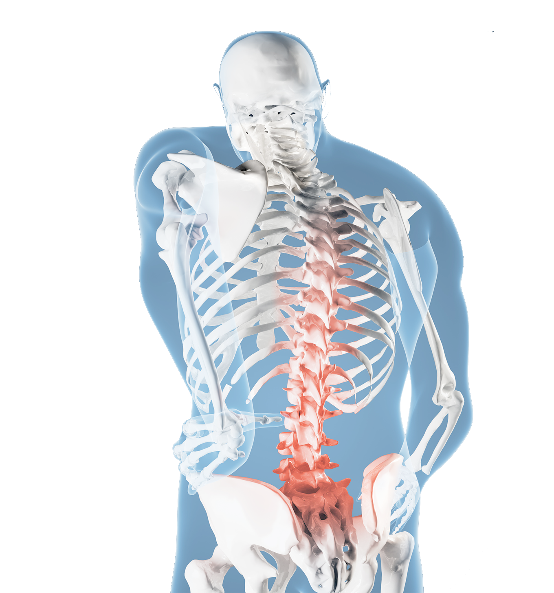
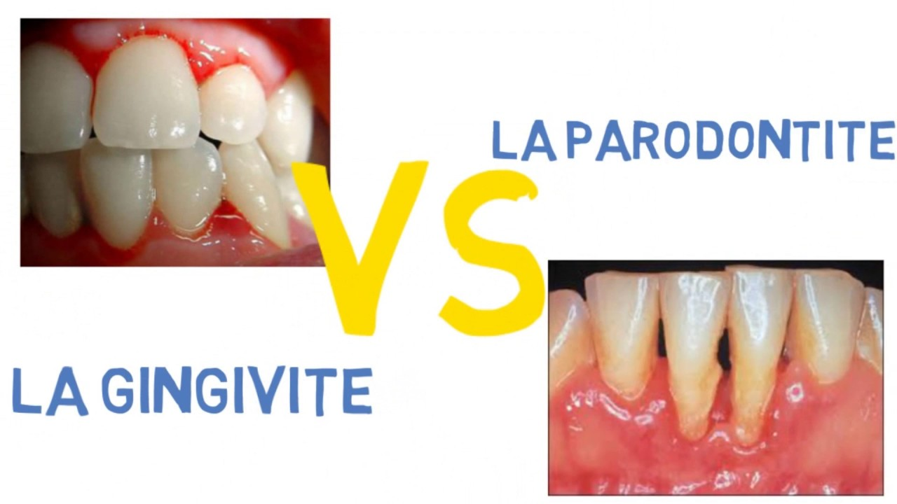
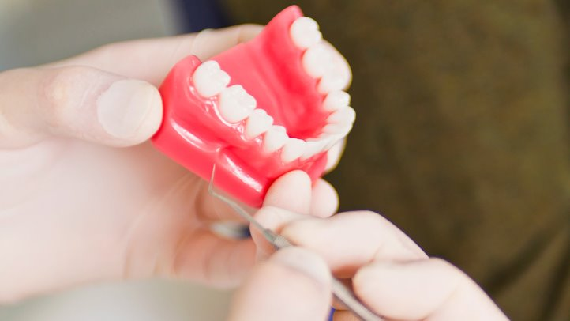

L’hiver, ce n’est pas la saison où l’on se sent le mieux. C’est vrai, votre organisme est affaibli par le manque de luminosité, mais aussi par les températures négatives...
Fièvre de l'enfant
La fièvre est importante. La fièvre aide votre enfant malade à guérir. Car des températures élevées permettent au corps de se défendre activement contre les agents pathologiques...
Santé dentaire
Avoir de belles dents passe par le respect de règles hygiéniques élémentaires. Mais les bonnes règles de prévention varient en fonction de l'âge et de situations...
Alzheimer
10 signes précurseurs de la maladie
Cholestérol
D'où vient le cholestérol ?
Arthrose
Causes et facteurs de risque de l'arthrose
Êtes vous allergique?
Les symptômes des différentes allergies
Haleine
Ce que votre haleine révèle de votre santé
Arrêter de fumer
Arrêter brutalement ou progressivement ?
Les vitamines
Où trouver les vitamines ?
Les vitamines sont indispensables au bon fonctionnement de l’organisme. Et comme le corps ne sait pas les fabriquer, c’est dans votre alimentation qu'il va falloir chercher pour éviter les carences. Attention, elle sont fragiles! Privilégiez les modes de cuisson rapides et la fraicheur des produits pour augmentez vos apports. Lucile Woodward
1/10
Vitamine B1 et B3 dans les légumes secs:
Les vitamines B1 et B3 aident au bon fonctionnement du système nerveux, à la production d’énergie et diminuent la perte de cheveux. On les trouve dans les légumes secs comme les haricots, les lentilles, ou les pois-chiches. Plutôt bons marchés, ces aliments serons vos alliés pour un hiver plein de tonus!
2/10
Vitamine B2 dans la volaille et les produits laitieres:
La vitamine B2 participe à la production d'énergie de glucides, de lipides et de protéines. Il est particulièrement utile contre l'insomnie et les maux de tête. On la trouve surtout dans la volaille et dans les produits laitieres. Pour les éternels fatigués, c'est poulet, caille et pigeon à tous les repas.
3/10
Vitamine C dans les fruits et légumes:
La vitamine C, c'est La vitamine qui renforce le système immunitaire. Elle est aussi indispensable pour accélérer la cicatrisation et aide également à consolider les dents et les os. On la trouve dans tous les fruits et légumes. Mais attention, plus ils sont conservés longtemps, plus la teneur en vitamine diminue. En hiver, pour avoir les végétaux les plus frais possible, optez donc pour les légumes surgelés, ou les fruits cueillis récemment et vous ferez le plein de vitamine C!
4/10
Vitamine B5 dans les viandes et oeufs :
La vitamine B5 intervient dans la transmission des messages nerveux, c’est la vitamine anti-stress. On la trouve principalement dans les protéines animals: viandes et oeufs.
5/10
Vitamine B9 dans les légumes verts et graines :
La B9, aussi appelée folate, est la vitamine des femmes enceintes. Elle joue un rôle essentiel dans la production de l’ADN et dans la protection contre les malformations du foetus. On la trouve dans les légumes verts, ainsi que dans les graines (lin, courge, tournesol...). Souvent l'agriculture intensive diminue la teneur en vitamine B9 dans les végétaux, c'est pourquoi il est souvent indispensable de suplémenter les femmes enceintes qui n'ont pas toujours un apport suffisant en folates meme avec une alimentation équilibrée.
6/10
Vitamine B12 dans les céréales et le lait :
La vitamine B12 intervient dans l'élaboration des globules rouges et participe à l'entretien des cellules nerveuses. C'est une vitamine anti-fatigue. On la trouve dans les céréales et dans le lait. Avis aux petits coups de fatigue: c'est muesli dans un grand bol de lait pour le petit-déjouner.
7/10
Vitamine A dans les viandes, les carottes et les épinards :
La vitamine A est nécessaire pour la vision. C'est également une vitamine antifatigue. On la trouve dans la viande et dans certains légumes comme les carottes et les épinards.
8/10
Vitamine D dans le beurre et le poisson :
La vitamine D assure l'assimilation des minéraux constituants de notre squelette. C'est l'une des rares vitamines fabriquées par notre organisme sous l'action des rayons du soleil. On a trouve aussi dans notre alimentation avec le poisson et le beurre. Cet hiver, votre rayon de soleil se trouve chez votre poissonnier !
9/10
Vitamine K dans le jaunes d'oeuf et les céréales :
La vitamine K permet la caogulation du sang et évite donc de trop saigner ou de faire des hémorragies. On la trouve dans le jaune d'oeuf et dans les céréales.
10/10
Vitamine E dans les légumes vert et les huiles végétales :
La vitamine E a des propiétés anti-inflammatoires et contribue au bon fonctionnement du coeur. On la trouve dans les huiles végétales et dans les légumes verts. La salade assaisonnée à l'huile d'olive a donc particulièrement sa place dans un régime alimentaire sain pour le coeur.
Contactez nous
Alzheimer
10 signes précurseurs de la maladie

Des pertes de mémoire, des troubles du raisonnement, des changements d'humeur et de comportement... Il existe de nombreux signaux précurseurs de la maladie d'Alzheimer qui peuvent alerter le patient et son entourage. Inutile pour autant de s'alarmer car il existe des symptômes similaires causés par d'autres maladies pour lesquelles existent des traitements médicaux. C'est pourquoi, si plusieurs de ces symptômes coexistent chez une même personne, il est important de consulter un médecin afin de confirmer le diagnostic de la maladie d'Alzheimer.
1 - Pertes de mémoire:
Oublier occasionnellement un rendez-vous, le nom d'un collègue ou un numéro de téléphone et s'en rappeler plus tard est un phénomène normal. En revanche une personne atteinte de la maladie d'Alzheimer oubliera fréquemment des événements récents et importants pour ne jamais s'en souvenir.
2 - Difficultés à exécuter les tâches familières:
Dans le cadre de nos activités quotidiennes, il nous arrive à tous d'être distraits et de mal nous y prendre. Une personne atteinte de la maladie d'Alzheimer peut ne plus être capable d'écrire, de cuisiner, d'éplucher des légumes, de boutonner sa veste, etc.
3 - Problèmes de langage:
Il peut être parfois difficile de trouver le mot juste. Une personne atteinte de la maladie d'Alzheimer perdra la capacité de finir ses phrases ou y substituera des mots inappropriés. Il est alors difficile pour les autres de comprendre ce qu'elle dit.
4 - Désorientation dans l'espace et dans le temps:
Il peut arriver que l'on oublie temporairement le jour de la semaine ou même l'endroit où l'on va. Mais une personne atteinte de la maladie d'Alzheimer peut se croire à une autre saison, une autre année déjà éloignée ou se perdre dans un endroit connu : elle ne sait plus comment elle s'est rendue là, ni comment rentrer chez elle.
5 - Jugement affaibli:
Parfois, lorsqu'on ne se sent pas bien, on tarde à se faire soigner. Mais avec la persistance ou l'aggravation des signes on finit par se rendre chez le médecin. Une personne atteinte de la maladie d'Alzheimer ne s'alarme pas de la gravité de ses difficultés et les banalise même, ce qui inquiète son entourage. Par ailleurs, une personne atteinte de la maladie d'Alzheimer n'est plus capable de juger une situation et pourra prendre des décisions déraisonnables.
6 - Difficultés face aux notions abstraites:
En vieillissant, une personne peut éprouver de la difficulté à s'adapter à de nouvelles techniques. Une personne atteinte de la maladie d'Alzheimer peut ne plus comprendre ce que représentent les chiffres et ce qu'elle doit faire. Nombreux sont ceux qui vont faire des dépenses inconsidérées qu'ils n'auraient jamais faites auparavant.
7 - Objets égarés:
Quiconque peut égarer temporairement son porte-monnaie ou ses clés. Une personne atteinte de la maladie d'Alzheimer rangera les objets dans des endroits inappropriés (un fer à repasser dans le congélateur ou une montre dans le sucrier par exemple).
8 - Changements d'humeur ou de comportement:
Il nous arrive à tous d'être triste et maussade. Une personne atteinte de la maladie d'Alzheimer peut changer d'humeur très rapidement (du calme aux pleurs ou à la colère) sans raison apparente.
9 - Changements de personnalité:
La personnalité de chacun peut changer quelque peu avec l'âge. Chez une personne atteinte de la maladie d'Alzheimer, on observera des changements très prononcés. Par exemple, une personne autrefois ouverte et confiante deviendra renfermée et méfiante. Au nombre des changements possibles, on compte aussi l'apathie, la peur et les comportements difficiles.
10 - Manque d'enthousiasme:
Il nous arrive à tous, à l'occasion, de nous lasser de l'entretien ménager, de notre travail ou de nos activités sociales, mais la plupart des gens retrouvent vite leur enthousiasme. Une personne atteinte de la maladie d'Alzheimer deviendra passive plus rapidement sans pour autant avoir un discours dépressif. Elle se désintéressera même d’événements importants.
Cette fiche a été réalisée par France Alzheimer et Maladies Apparentées. Cette association nationale a été créée en 1985, par des familles de malades et des professionnels des secteurs sanitaire et social, pour offrir un soutien aux parents désemparés et isolés de ces 860 000 malades.
Le cholestérol
Qu'est-ce que le cholestérol et à quoi sert-il ?
Le cholestérol est une graisse naturelle indispensable à l'organisme. Il permet entre autres la synthèse de la vitamine D ou de la bile. C'est un constituant de la paroi de nos cellules. Enfin, il entre dans la composition de nombreuses hormones, comme les hormones sexuelles.
D'où vient le cholestérol ?
Il est pour l'essentiel produit par le foie (3/4) et le reste provient de l'alimentation. On le trouve dans les produits d'origine animale à des taux très variables : viandes, abats, produits laitiers, crustacés, coquillages, poissons, oeufs...
Comment s'équilibre le taux de cholestérol ?
Le LDL Cholestérol transporte le cholestérol provenant des aliments vers les tissus. Les HDL Cholestérol a pour fonction de transporter l'excédent de cholestérol dans le sang vers le foie et participe ainsi à l'élimination de cette graisse par l'organisme. Mais un dessin vaut mieux qu'un long discours.
Comment savoir si on a trop de cholestérol ?
Le cholestérol circule librement dans le sang, ainsi il peut être aisément dosé grâce à une simple prise de sang. On pourra doser dans un premier temps le dosage du cholestérol total (bon cholestérol + mauvais cholestérol). Si ce bilan se révèle perturbé (supérieur à 2g/l et triglycérides supérieur à 2 g/l), le médecin demandera un bilan plus approfondi avec dosage du mauvais cholestérol et du bon cholestérol.
En cas de risque cardiovasculaires associés, le médecin pourra procéder d'emblée à un dosage approfondi. Depuis peu, le dosage du cholestérol total peut se faire à domicile grâce à un test individuel vendu en pharmacie.
Quelles sont les valeurs des taux de cholestérol normales chez l'adulte ?
Les valeurs normales du taux de cholestérol chez l'adulte sont :
Taux de cholestérol
Valeur normales
Cholestérol total
< 2g/l
LDL - Cholestérol (mauvais cholestérol)
< 1,6 g/l
HDL-Cholestérol (bon cholestérol)
> 0,35 g/l
Attention, si le patient combine d'autres facteurs de risque, le traitement pourra débuter pour des valeurs moindres.
Comment faire baisser mon taux de cholestérol ?
Pour faire baisser votre taux de cholestérol, vous disposez de deux leviers : la diététique et les traitements médicamenteux.
Dans un premier temps, votre médecin vous prodiguera des conseils diététiques vous permettant de réduire l'ingestion de graisses néfastes.
Si ces conseils ne portent pas leurs fruits, des traitements médicamenteux peuvent réduire l'assimilation des graisses par l'organisme, réduire le LDL cholestérol ou augmenter le HDL cholestérol ou avoir des actions combinées. Pour en savoir plus, lire notre article sur les hypolipidémiants.
L'arthrose

L'arthrose est une dégénérescence du cartilage des articulations sans infection ni inflammation particulière. Cependant, il existe des formes avec une composante inflammatoire et beaucoup de patients présentent des poussées d'inflammation sporadiques. Cette dégénérescence conduit à une destruction plus ou moins rapide du cartilage qui enrobe l'extrémité des os. Anatomiquement, cette destruction s'accompagne d'une prolifération osseuse sous le cartilage.
C'est la maladie articulaire la plus fréquente. Les premiers symptômes apparaissent généralement à partir de 40-50 ans, mais la maladie commence souvent bien plus tôt dans la vie.
Causes et facteurs de risque de l'arthrose:
Dans l'arthrose, la destruction du cartilage correspond à une fissuration de la surface vers la profondeur du tissu cartilagineux. Cette fissuration est liée à des phénomènes mécaniques, mais elle est également favorisée par des altérations biochimiques de la structure du cartilage.
Schématiquement, on peut considérer que l'arthrose est le résultat :
- De contraintes physiques anormales sur un cartilage normal.
- De contraintes physiques normales sur un cartilage anormal.
- De la conjonction des deux situations précédentes.
Les principaux facteurs de risques suspectés sont :
- Généraux : âge, poids, ménopause, autres rhumatismes (chondrocalcinose, hyperostose de Forestier…).
- Génétiques : la notion d'arthrose familiale est bien démontrée pour les arthroses du genou, de la hanche et de la main.
- Locaux :
- Traumatismes importants ou faibles à répétition (travaux pénibles, sports violents, lésion du ménisque…).
- Anomalie de position de l'articulation (scoliose, malformation de la hanche, …).
- Autres maladies osseuses ou articulaires localisées (séquelles d'arthrite, séquelles de fractures, maladie de Paget…).
A l'origine de l'arthrose interviennent de nombreux facteurs souvent encore mal connus. Cependant, le caractère génétique de l'affection semble prédominant. Il existe des familles d'arthrosiques et la maladie atteint plus fréquemment les femmes que les hommes. Par exemple, si certaines professions (travaux de force) sont plus exposées à l'arthrose que d'autres, tous les membres de cette profession ne feront pas d'arthrose (en partie en fonction de leur prédisposition génétique).
Le dépistage des anomalies articulaires congénitales, suivi d'une correction dans l'enfance, est d'une importance capitale pour éviter l'apparition d'une arthrose douloureuse à l'âge adulte.
L'obésité (ou le simple surpoids) est sans aucun doute un facteur favorisant l'apparition de l'arthrose au niveau des hanches et surtout des genoux.
Pour en savoir plus, découvrez notre article sur les facteurs de risque de l'arthrose.
Les symptômes de l'arthrose:
Les signes de la maladie arthrosique varient selon l'articulation concernée. Cependant, dans tous les cas, le motif principal de consultation est la douleur associée à une gêne fonctionnelle . La douleur est, en principe, dite de type "mécanique" car elle présente les caractéristiques suivantes :
- Elle est déclenchée et aggravée par le mouvement.
- Elle cesse ou s'atténue plus ou moins complètement lorsque l'articulation est au repos.
- Elle est moins importante le matin, puis elle augmente dans la journée et elle est maximale le soir.
- Elle gêne traditionnellement l'endormissement, mais peut également entraîner des réveils nocturnes (environ 50 % des patients arthrosiques sont réveillés la nuit par leur douleur).
- Elle réapparaît chaque fois que l'articulation concernée est soumise à un effort : la marche pour l'arthrose de hanche, monter un escalier pour le genou, lever le bras pour l'épaule…
La gêne fonctionnelle correspond à une limitation de la mobilité de l'articulation touchée par l'arthrose. Elle est variable selon l'activité du patient. Ainsi, un joueur de golf sera beaucoup plus gêné par une arthrose du genou qu'un sujet ne pratiquant pas de sport. De même qu'un pianiste sera très handicapé par une arthrose des doigts, même légère.
Les articulations arthrosiques ne sont, en principe, ni rouges, ni chaudes. Elles peuvent être gonflées lorsque s'installe un épanchement liquidien (épanchement de synovie), ce qui est particulièrement fréquent au niveau des genoux. Cependant des périodes de poussée inflammatoire existent et il y aurait une composante inflammatoire dans cette maladie, différente et moins importante que celle de la polyarthrite rhumatoïde.
A la longue, les excroissances osseuses ostéophytes provoquent des déformations des articulations, surtout visibles au niveau des mains et des genoux.
L'état général du patient est toujours bon. Il n'y a ni fièvre ni amaigrissement.
Les lésions arthrosiques sont irréversibles et aboutissent, outre les déformations, à un raidissement articulaire pouvant évoluer vers une impotence partielle.
Allergies
Les symptômes des différentes formes d’allergies:
L’OMS estime que 50 % de la population mondiale sera affectée par des allergies, toutes formes confondues, d’ici 2050. Les signes et symptômes d’une réaction allergique sont nombreux et peuvent aller de simples écoulements nasaux à des chocs anaphylactiques potentiellement fatals. Comment les reconnaître ? Quels sont ces symptômes des allergies alimentaires, cutanées et respiratoires et comment réagir ? Les réponses avec le Dr Dalila Nouar, praticien hospitalier dans le service d’Allergologie et Immunologie clinique du CHRU de Tours.
Les modifications de notre environnement et de nos modes de vie ont un impact important sur les maladies allergiques. "En France, les allergies sont en forte augmentation également", explique le Dr Dalila Nouar. "Notre mode de vie, toujours plus aseptisé, est également un des facteurs de développement des maladies allergiques. A force, notre corps ne sait plus bien distinguer ce qui est allergisant ou non." Résultat : de plus en plus d’allergies, aussi bien alimentaires que cutanées ou respiratoires.
Symptômes de l’allergie alimentaire:
L’allergie alimentaire se manifeste par une réaction immédiate ou dans un délai d’1 à 2 heures, après ingestion de l’aliment en cause. "Elle peut être très grave voire fatale", prévient le Dr Nouar.
Concernant les symptômes, ils peuvent être modérés comme très alarmants, avec un risque vital :
• Urticaire ;
• Œdème de la face ;
• Prurit buccopharyngé ;
• Gêne respiratoire ;
• Douleurs abdominales, diarrhées ;
• Perte de connaissance ;
• Arrêt cardiaque, dans les cas extrêmes.
En cas de suspicion d’allergie à certains aliments, il est absolument nécessaire de consulter un allergologue.
"Beaucoup de ces aliments engendrent en fait des réactions d’hypersensibilité non allergique", nuance le Dr Nouar, "Ce qui fait que beaucoup de personnes se croient allergiques alors qu’elles ne le sont pas réellement. Il faut donc les différencier des vraies réactions allergiques alimentaires."
Pour ce faire, l’allergologue réalisera des tests cutanés aux aliments ainsi que des prises de sang spécifiques. Dans une structure d’hôpital de jour, l’expert pourra même aller jusqu’au test de réintroduction de l’aliment incriminé.
En cas d’allergie alimentaire prouvée, cet aliment sera définitivement contre-indiqué et le patient devra toujours disposer d’une trousse d’urgence avec un stylo d’adrénaline en cas d’ingestion par inadvertance de cet allergène ou en cas d’allergène caché.
Symptômes de l’allergie cutanée:
Il existe différentes formes d’allergies cutanées, dont les symptômes peuvent varier en fonction du délai d’apparition.
• L’urticaire : elle peut être liée à une allergie alimentaire ou médicamenteuse ou aux venins d’hyménoptères. "Dans ce cas présent, il faut être vigilant à ce qu’il n’y ait pas une aggravation des symptômes avec un œdème de la face ou une anaphylaxie sévère", avertit l’experte.
• Des eczémas : ils se manifestent par un "érythème avec des plaques sèches ou par des démangeaisons".
• Des toxidermies érythémateuses : "C’est le nom d’un ensemble de lésions cutanées, retardées, conséquentes d’un médicament, ou d’un allergène appliqué sur la peau", affirme le Dr Nouar.
Pour ces cas de figure, il convient d’aller consulter un allergologue pour identifier l’allergène. "Il faut trouver le facteur déclenchant : il s’agit d’un interrogatoire très précis. Ce peuvent être des produits cosmétiques, chimiques, des métaux, des médicaments etc.", énumère l’allergologue. Lors de la consultation, le professionnel de santé qualifié utilisera un patch test pour déterminer le médicament incriminé et établir s’il y a allergie de contact ou non.
Symptômes de l’allergie respiratoire:
Plusieurs symptômes traduisent une allergie respiratoire. La principale reste la gêne respiratoire, qui se traduit par des sifflements ou une oppression de la cage thoracique, ou une toux sèche.
Dans un contexte de sensibilisation aux aéroallergènes (acariens, pollens, phanères d’animaux, moisissures), peuvent survenir :
• Une rhinite : une inflammation des muqueuses nasales ;
• Une conjonctivite ; une inflammation de la conjonctive de l’œil qui devient rouge ;
• Un asthme ; une inflammation des voies respiratoires.
En cas de symptômes de ce type, la consultation chez l’allergologue servira à déceler la source de l’allergie grâce à des tests cutanés. "Ces derniers déterminent le facteur déclenchant grâce à la saison et établissent si c’est l’allergie est plutôt saisonnière ou perannuelle", raconte le Dr Nouar.
Une désensibilisation de l’agent allergène (fréquemment des acariens) peut alors être envisagée "Pour guérir totalement ces symptômes, seul un traitement de désensibilisation sera efficace."
Haleine
Ce que votre haleine révèle de votre santé
Vous avez l’impression de sentir mauvais de la bouche ou une âme délicate a eu le courage de vous en parler ? Au-delà de la gêne qu’elle procure, la mauvaise haleine peut aussi être le signe de maladies plus sérieuses. Environ 20 % de la population serait concernée. Alors on ouvre grand la bouche et on dit "A"…
Source : Entretien avec Yves Victor Kamami, ORL à Paris et assistant au centre hospitalier des quatre villes (92).
1/11

Une Gingivite ou une parodontite :
La gingivite est une inflammation de la gencive due à la présence de bactéries, qui s'infiltrent dans l'os au niveau de la racine de la dent et la détruisent. Si elle n’est pas traitée, elle peut se transformer en parodontite, les gencives sont sévèrement atteintes et les dents peuvent se déchausser. Ces bactéries stagnantes et non éliminées sont à l’origine des mauvaises odeurs buccales. La grossesse, le tabac, la ménopause peuvent provoquer l’apparition d’une gingivite.
Quel traitement ?
Une bonne hygiène bucco-dentaire permet de réduire et de prévenir l’évolution de la gingivite. Rendez-vous tout d’abord chez le dentiste pour poser le diagnostic de la gingivite et vérifier son degré d’évolution en mesurant la profondeur du sillon gingivo-dentaire, l’espace entre la gencive et la dent. Le spécialiste en profitera pour effectuer un détartrage (à effectuer tous les 6 mois à un an). Enfin pensez à vous laver les dents 2 à 3 fois par jour durant au moins 2 minutes comme le recommande l’UFSBD (l’union Française de la santé Bucco-dentaire). Vous pouvez y ajouter un peu de poudre de bicarbonate de sodium qui a le pouvoir de réduire les mauvaises odeurs. Sans oublier de passer un fil dentaire entre les dents afin d’éliminer les résidus alimentaires qui peuvent aussi être à l’origine de mauvaises odeurs s’ils stagnent trop longtemps dans la bouche. Les acides aminés venant des protéines des aliments donnent effectivement une odeur soufrée à l’haleine.
2/11
Une langue chargée :
Les mauvaises odeurs peuvent aussi émaner des bactéries situées sur la langue. Le dessus de la langue, mal irrigué par la salive peut effectivement entrainer une putréfaction des bactéries.
Quel traitement ?
Réaliser quelques bains de bouche que vous pouvez effectuer quotidiennement pour rafraichir la bouche à base de menthol ou de fluor. Il existe d’autres produits dont les composants (fluorure d’étain notamment) inactivent les bactéries et ralentissent le métabolisme bactérien et empêchent ainsi la formation de substances malodorantes. Ils ne s’utilisent qu’une dizaine de jours pour ne pas déséquilibrer la flore bucco-dentaire. Pensez aussi à brosser votre langue. Le brossage de la langue se fait d’arrière en avant pour éliminer les dépôts qui la recouvrent à l’aide d’un gratte-langue ou de la surface siliconée de la brosse à dents. N’utilisez jamais les poils de la brosse car ils risqueraient de créer des micros lésions sur la langue où pourraient se glisser les bactéries.
3/11
Et si c’était un abcès et une carie dentaire ?
Une carie dentaire, un abcès tout comme le cratère laissé par une extraction de dent peuvent être un foyer à bactéries. Il est nécessaire de faire régulièrement un bilan dentaire pour détecter les dents malades ou cariées.
Que traitement ?
Faites soigner correctement les dents cariées, et réalisez régulièrement des bains de bouche. Si l’infection est déclarée, le médecin extraira la dent ou traitera l’abcès. Bien souvent le chirurgien dentiste prescrit également un antibiotique durant une dizaine de jours afin d’éradiquer l’infection.
4/11

Vérifiez vos prothèses dentaires :
Mal nettoyées ou portées trop longtemps, les prothèses dentaires peuvent dégager à la longue de très mauvaises odeurs. Notamment si vous avez tendance à la garder en bouche durant la nuit. C’est encore une fois la faute des bactéries restées nichées dans les recoins de la prothèse.
Quel traitement ?
Avoir une hygiène irréprochable en revoyant les consignes de nettoyage d’une prothèse. D’abord, ne pas la porter plus de 24 heures d’affilée. Ensuite, penser à la nettoyer après chaque repas en la brossant avec une brosse à dents. Tous les soirs plongez-la dans un bain antiseptique (sous forme de pastille effervescente à diluer dans un verre d’eau) durant 15 minutes.
5/11
Souvent un problème d’acidité gastrique :
Lorsque la valve entre l’estomac et l’œsophage est défectueuse, l’acide contenu dans l’estomac (et servant à la digestion), remonte en position couchée, durant la nuit, le long du tube digestif jusqu’à la bouche, dégageant souvent un gaz nauséabond.
Quel traitement ?
L’ORL va d’abord examiner les cordes vocales. Si elles sont rouges et gonflées à leur partie postérieure, c’est effectivement le signe d’un reflux gastro-œsophagien. Il prescrira alors un traitement anti-reflux ou un anti-sécrétoire acide sous forme de comprimés à prendre 15 minutes avant les repas. Bien souvent, tout rentre dans l’ordre après un mois de traitement. Si ce n’est pas le cas, le spécialiste procédera à des examens plus complets. En orientant le patient vers le gastro-entérologue pour effectuer une gastroscopie ou une pH-métrie (dosage du pH dans l’œsophage et l’estomac). Il pourra ainsi poser son diagnostic d’ulcère, de gastrite ou d’œsophagite.
Généralement, le traitement anti-sécrétoire acide est efficace, sauf s’il existe dans l’estomac un germe appelé Helicobacter pylorii, qui nécessite alors également un traitement antibiotique.
6/11
Quand les amygdales font des leurs :
Parfois, pour trouver l’origine de la mauvaise haleine, il faut aller scruter de plus près les amygdales. Chez les patients jeunes entre 20 et 30 ans, elles comportent des cryptes dans lesquels viennent se nicher des germes nauséabonds. Toutes sortes de débris alimentaires viennent s’agglutiner à cet endroit. Ils fermentent et forment une pâte blanchâtre appelé le caséum..
Quel traitement ?
Dans l’immédiat, vous pouvez, par une simple pression sur l’amygdale avec le manche d’une fourchette par exemple, vider l’amygdale de cette boule blanchâtre. Mais très vite, au fil des semaines, le caséum va se reformer. La solution radicale et définitive reste l’ablation partielle ou totale des amygdales. L’opération s’effectue soit par laser, en ambulatoire, soit par chirurgie sous anesthésie générale (avec alors une hospitalisation d’au moins deux jours).
7/11
Allez voir du côté des sinus :
Quelques corps étrangers peuvent venir se nicher au fond des sinus sans que l’on s’en rende véritablement compte. C’est le cas de la pâte dentaire qu’utilise le dentiste lors d’un soin. Il arrive parfois qu’un peu de ce résidu passe par la racine de la dent dans le sinus. Restant coincés plusieurs jours ou semaines, ils provoquent une prolifération bactérienne et dégagent à la longue une odeur malodorante. Un écoulement s’effectue aussi dans la bouche.
Quel traitement ?
L’ORL va examiner par un examen clinique et fibroscopique l’entrée des sinus et l’arrière de la gorge. S’il constate un écoulement jaune, vert ou marron, il pourra demander un scanner ou une radio des sinus. Une opération chirurgicale sous anesthésie générale sera alors nécessaire pour enlever la pâte dentaire. La méatotomie a pour but d'ouvrir largement le sinus dans le nez, pour permettre aux sécrétions purulentes de s'évacuer dans la fosse nasale. L’opération dure environ une heure et nécessite deux jours d’hospitalisation.
8/11
Vérifiez vos médicaments :
Certains traitements ont la particularité d’assécher la bouche. C’est le cas des antihistaminiques, les antidépresseurs, les antipsychotiques et les antihypertenseurs ayant une action sur le système nerveux parasympathique qui commande les glandes salivaires. La salive riche en substances antibactériennes n’irrigue plus suffisamment la bouche et les bactéries s’installent en grand nombre, accompagnées de leur odeur fétide.
Quel traitement ?
Pensez à boire de l’eau ou des infusions de menthe poivrée ou verte régulièrement afin de bien humidifier l’intérieur de la bouche et contribuer ainsi à l’élimination des bactéries. Vous pouvez aussi mâcher au cours de la journée du chewing-gum sans sucre pour favoriser la sécrétion de salive et/ou consommer des agrumes qui déclenchent la production salivaire.
9/11
Et si votre foie était encombré ?
Un foie capricieux, des repas trop lourds, une période de fatigue peuvent provoquer une halitose généralement générée par l’absorption d’aliments contenant de l’azote. C’est le cas des protéines. Généralement, cet azote est éliminé par le foie et les reins. Si le foie est défectueux, cette opération ne pourra pas se faire. L’azote remonte alors de l’estomac pour s’échapper par la voie buccale.
Quel traitement ?
Le gastroentérologue vous fera réaliser un bilan sanguin pour repérer les enzymes hépatiques dans le foie et un scanner du foie. L’halitose peut être le signe révélateur d’une insuffisance hépatique, d’une cirrhose ou d’une hépatite.
A la maison, facilitez le travail du foie en consommant tout d’abord des aliments faciles à transformer par le foie comme les légumes et les fruits. Evitez de consommer trop de protéines. Profitez-en pour réduire aussi la consommation d’alcool et de tabac propices au dysfonctionnement du foie.
10/11
Parfois le cycle pré-menstruel en cause :
Juste avant les règles, une modification hormonale se produit chez la femme, entrainant notamment une production de plaque dentaire plus importante qui favorise la prolifération des bactéries. Ce changement hormonal influence aussi la flore intestinale et charge le souffle en soufre.
Quel traitement ?
Pensez à avoir une hygiène dentaire et buccale irréprochable en vous lavant régulièrement les dents et en effectuant des bains de bouche. Cela ne traite pas la cause réelle de la mauvaise haleine mais pourra la masquer durant cette courte période chaque mois avant vos règles.
11/11
Attention aux régimes protéinés :
Ils sont très efficaces pour retrouver la ligne en un temps record mais ils ont l’inconvénient de favoriser une mauvaise haleine. Principal responsable : le principe lui-même du régime protéiné riche en viandes, poissons, laitages, œufs et quasiment nul en glucides. En l’absence de glucides, le corps va brûler des graisses et libérer dans le sang des déchets appelés corps cétoniques. Très volatiles, ils vont également se dégager dans les voies respiratoires et donner une mauvaise odeur à votre haleine.
Quel traitement ?
Mettre votre mal en patience et attendre la fin du régime car cette odeur d’acétone prouve que le régime fonctionne. Une fois terminé, la reprise de glucides en quantité raisonnable devrait rétablir votre bonne haleine.
Arrêter de fumer
Arrêter brutalement ou progressivement ?
Alors qu'on pensait hier que seul l'arrêt total du tabac menait à la réussite, on sait aujourd'hui qu'un sevrage progressif est possible. Et là encore, en fonction de chacun, on pourra choisir la méthode la plus adaptée. Et parce que le tabagisme est un comportement renforcé par une dépendance, dont la nicotine est principalement responsable, seule une minorité de fumeurs parvient à une abstinence permanente dès la première tentative d’arrêt, alors que la majorité persiste dans une consommation de tabac sur plusieurs années selon une alternance de périodes de rechutes et d’abstinence.
Pour le Dr Peim, "c'est souvent très anxiogène pour un fumeur d'arrêter brutalement et ce stress peut être synonyme d'échec. Il peut être pertinent de supprimer d'abord les cigarettes de la journée. Tous les fumeurs qui travaillent savent combien descendre les 25 étages de son bureau 10 fois par jour pour fumer peut être contraignant… L'usage du substitut dans la journée permettra de se passer de ces cigarettes et d'aller progressivement vers un arrêt total".
Quelle que soit la méthode choisie, la personne qui décide d'arrêter de fumer doit devenir l'acteur principal de son sevrage. Le bon timing et la bonne méthode lui appartiennent.
Arrêter seul ou se faire aider ?
Si vous décidez d’arrêter de fumer, vous pouvez choisir de le faire seul ou bien d’être entouré par des professionnels de santé.
Les fumeurs qui entreprennent leur démarche seul peuvent bénéficier :
- D’un accompagnement téléphonique grâce à Tabac Info Service ; - D'un coaching personnalisé en téléchargeant l’application Tabac Info Service ; - La ligne 3989 et le site internet permettent également aux internautes d’accéder à un suivi personnalisé dans leur démarche d’arrêt ou celle de leurs proches, par messagerie. Pourtant, les chiffres ne mentent pas : plus de neuf fois sur dix, les fumeurs n’arrivent pas à arrêter leur consommation de tabac sans se faire aider par des professionnels de santé. Dans ce cas, il est conseillé de faire appel à des spécialistes qui pourront vous conseiller et vous orienter, tels que des tabacologues, des addictologues ou encore des psychologues.
L’implication des médecins traitants, grâce à leur rôle de prévention et leur proximité avec les patients, est indispensable. Cela suppose pour certains d’entre eux une sensibilisation préalable. Le rôle d’autres professionnels de santé (sages-femmes et infirmiers, notamment) est également non-négligeable.
Selon les recommandations de l’Agence nationale de sécurité des médicaments (ANSM), l’aide au sevrage tabagique peut prendre des formes variées et plus ou moins intensives selon l’importance des dépendances et des difficultés à l’arrêt, allant du conseil minimal donné par tout professionnel de santé à l’intervention de tabacologues pour les formes les plus sévères.